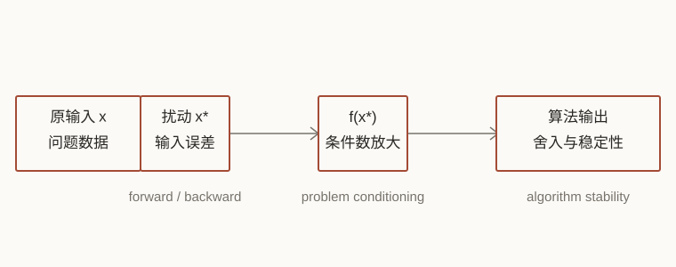

Study note / 2026-09-13
数值分析
按教材第 1、2、4–9 章整理。第 3 章线性方程组见数值代数。
范围
| 章节 | 这里保留的主线 |
|---|---|
| 1–2 | 浮点数、舍入误差、条件数、稳定性 |
| 4 | 非线性方程与非线性方程组 |
| 5–7 | 一致逼近、插值、样条 |
| 8 | 正交系统、最小二乘与正则化 |
| 9 | 数值积分与数值微分 |

1. 计算机算术
浮点数系统
计算机只保存有限位数的数。一个规范化的浮点数写成
\(\beta\) 是进制，\(p\) 是有效数字位数，\(e\in[L,U]\) 是指数范围。规范化后，最高位不为零；不同指数区间的间隔不同，所以浮点数在数轴上并不是等距的。
固定指数 \(e\) 时，相邻规范化浮点数的间隔约为 \(\beta^{e-p+1}\)。同一个绝对误差落在不同数量级上，代表的相对误差并不相同。靠近零的非正规数不满足相同的相对间隔，下面的相对舍入模型默认结果仍处在正常数范围内。
教材用机器精度 \(\varepsilon_M=\beta^{1-p}\) 描述 \(1\) 与下一个浮点数之间的距离，并用 \(u\) 记舍入的单位量。对 IEEE 754 的双精度，\(\varepsilon_M\approx2.22\times10^{-16}\)。指数超出范围时发生上溢或下溢：
舍入和基本运算
舍入是从实数到浮点数的映射 \(\operatorname{fl}\)。默认模式是就近舍入，恰好位于中点时取偶数位。只要结果没有上溢或下溢，常用模型是
在没有上溢、下溢且精确结果可正常表示时，每个基本运算都可逐步写成
这是单步舍入的模型。多步运算要把各步的 \(\delta\) 叠加起来；而减法中输入本来就有的误差，还可能因为相消被放大。
对乘法和除法，这个模型通常可以直接使用。加法和减法还要考虑对阶以及结果本身的尺度；如果两个数几乎相等，减法会把前面已经存在的误差一起放大。
若 \(a_i>0\)，连续求和的舍入误差可以合并写成
这里的线性增长是数量级估计，不是“任何顺序都一样”。长序列求和时，把大数和小数分开或使用补偿求和，都可以减小累计误差。
灾难性消去
设 \(x>y>0\)，如果 \(y/x\) 很接近 \(1\)，则 \(x-y\) 的有效位数会明显减少。计算中原来的相对误差大致按
被放大。能改写时，优先使用等价但不相消的表达式。例如 \(x\) 很小时，不直接算 \(1-\cos x\)，而写成 \(2\sin^2(x/2)\)；不直接算 \(x-\sin x\)，而使用
“每一步都满足相对误差很小”并不能推出最终结果可靠；表达式的条件数和运算顺序要一起检查。
2. 稳定性与条件数

前向误差和后向误差
设精确量为 \(x\)，计算结果为 \(\widehat{x}\)。绝对误差和相对误差分别为
前向误差直接比较输出。后向误差反过来问：\(\widehat{y}\) 是不是某个轻微扰动输入的精确结果？如果存在 \(\widehat{x}=x+\Delta x\)，使
就称算法在这个输入上后向稳定。后向稳定并不等于输出误差一定小；它还需要问题 \(f\) 本身是良态的。
条件数：问题对输入有多敏感
对可微的标量函数，绝对条件数和相对条件数可写为
相对扰动很小时，输出相对误差的一阶估计是
向量函数用 Jacobian \(J_f(x)\) 描述。常见的相对估计为
问题的条件数还要和算法本身的条件数分开。若浮点算法 \(f_A\) 的输出可以看成某个精确输入 \(x_A\) 的 \(f(x_A)\)，则
它衡量算法为了产生当前输出，等价地改变了多少输入；接近 \(1\) 表示算法只引入了一个机器精度量级的扰动。若各分量的相对尺度很重要，可改用分量条件数
分母或输入分量为零时，分量相对误差需要单独约定；不能机械套用这个式子。
线性方程组 \(Ax=b\) 对矩阵和右端项的敏感度由
控制。条件数大，表示问题本身会放大数据误差；换一个算法不能改变这个事实，只能避免额外放大。
例如 \(Ax=b\)、\(\widehat A\widehat x=\widehat b\)，记
当 \(\operatorname{cond}(A)\eta_A<1\) 时，有标准扰动界
这条不等式把“矩阵扰动”和“右端项扰动”放在同一个条件数下比较，也说明了为什么接近奇异时，哪怕数据改动很小，解也可能变化很大。
稳定的算法和总误差
算法的签名不只包括输入和输出，还包括前置条件、后置条件，以及输入不满足条件时的处理方式。实际计算通常包含三件事：先把 \(x\) 舍入成 \(x^\ast\)，再用算法求 \(f_A(x^\ast)\)，最后比较 \(f_A(x^\ast)\) 与 \(f(x)\)。一阶估计可以写成
第一项是数据输入和问题条件数的作用，第二项是算法误差。判断一个结果时，先问问题是否良态，再问算法是否稳定，不能只看最后输出的几位数字。
4. 非线性方程

二分法
目标是求 \(f(\alpha)=0\)。若 \(f\in C[a,b]\) 且 \(f(a)f(b)<0\)，介值定理保证区间内至少有一个根。第 \(k\) 次取中点
不变量是 \(f(a_k)f(b_k)\le0\)。区间长度和中点误差满足
因此它一定收敛，Q-线性渐近因子为 \(1/2\)。停止条件可以是 \(|f(m_k)|<\varepsilon\)、区间长度小于 \(\delta\)，或达到最大迭代次数。函数连续和初始变号是正确性的前提。
收敛阶
若 \(x_k\to L\)，且极限存在并满足
则称为 Q-阶 \(p\) 收敛。\(p=1\) 是线性收敛，\(p=2\) 是二次收敛。阶数描述后期误差的下降速度，不保证远离根时也会收敛。
Newton 法和割线法
Newton 迭代为
若 \(f\in C^2\)，\(\alpha\) 是单根（\(f'(\alpha)\ne0\)），且初值足够接近 \(\alpha\)，则至少二次收敛；误差关系为
初值太远、导数接近零或函数有多个根时，Newton 法可能发散或跳到另一个根。若 \(\alpha\) 是 \(m\) 重根，可用修正迭代 \(x_{k+1}=x_k-mf(x_k)/f'(x_k)\) 恢复二次阶。
割线法用差商代替导数：
它不需要 \(f'\)，在条件合适时 Q-阶为黄金比 \(\varphi=(1+\sqrt5)/2\)，介于线性和二次之间。
停止迭代时最好同时检查步长和残差。仅有 \(|f(x_k)|\) 很小并不一定说明根的位置很准：若 \(f'(x_k)\) 也很小，根的误差仍可能较大。实际可结合 \(|x_{k+1}-x_k|\)、\(|f(x_{k+1})|\) 以及二分法留下的区间一起判断。
固定点和方程组
把方程改写成 \(x=g(x)\)。若 \(g:[a,b]\to[a,b]\)，且 \(|g'(x)|\le q<1\)，则迭代 \(x_{k+1}=g(x_k)\) 有唯一不动点，并满足
局部判断通常看 \(|g'(\alpha)|\)：小于 \(1\) 才有局部收敛，等于零时可能出现更高阶收敛。不同的等价改写会改变这个导数，所以“方程相同”不代表迭代性质相同。
向量情形只需把导数换成 Jacobian：若某个闭域在选定范数下满足 \(g(D)\subset D\) 且 \(\|J_g(x)\|\le q<1\)，同样可由压缩映射得到唯一不动点和线性误差界。
对 \(F(x)=0\)，Newton 法变成
每一步要解一个线性方程组。Jacobian 难以计算时，可以用 Broyden 一类的拟 Newton 方法逐步更新 \(J_F\) 或其逆的近似，换取较少的导数计算，但要额外关注更新矩阵是否退化。
以更新 Jacobian 近似 \(B_k\) 为例，令 \(s_k=x_{k+1}-x_k\)、\(y_k=F(x_{k+1})-F(x_k)\)，一个常见的秩一更新为
| 方法 | 主要条件 | 局部速度 | 特点 |
|---|---|---|---|
| 二分 | 连续、初始变号 | 线性 | 稳健，有区间误差界 |
| Newton | 导数、初值较近 | 二次 | 快，但对初值敏感 |
| 割线 | 两次函数值 | \(\varphi\) 阶 | 不求导 |
| 固定点 | 压缩映射 | 通常线性 | 改写方式决定收敛性 |
5. 一致逼近
范数和最佳逼近
在 \(C[a,b]\) 上，一致范数为
给定函数空间 \(X\)，最佳逼近 \(\widehat\varphi\in X\) 满足
有限维子空间中，最佳逼近存在。唯一性还要看范数：严格凸范数下唯一；一致范数一般不严格凸，所以需要额外条件。
最小最大逼近
在 \(P_n\) 中取一致范数时，误差 \(e=f-p^\ast\) 的特征是交错定理：存在 \(n+2\) 个点
符号交替且绝对值都达到最大值，是判断一个多项式是否为 minimax 逼近的实用条件。它也解释了为什么只在某一个局部把误差压得很小，不代表整体误差已经最优。
Bernstein 多项式和 Weierstrass 定理
在 \([0,1]\) 上，Bernstein 基函数为
Bernstein 算子用 \(k/n\) 处的函数值定义：
基函数非负且构成分割统一，因此 \(B_n\) 保持常数和单调性。对每个连续函数，\(\|B_nf-f\|_\infty\to0\)，这给出 Weierstrass 多项式逼近定理。
连续模和 Jackson 估计
函数的连续模记录尺度 \(\delta\) 上的最大变化：
它把“连续”变成了可估计的量。教材给出的 Bernstein 估计（在 \([0,1]\) 上）是
更一般的 Jackson 型估计在 \([-1,1]\) 上写作
因此函数越光滑，或者连续模下降得越快，所需的多项式次数越低。逼近阶数不是只由 \(n\) 决定，也取决于被逼近函数。
Chebyshev 多项式
第一类 Chebyshev 多项式用三角函数定义：
它满足递推 \(T_0=1\)、\(T_1=x\)、\(T_{n+1}=2xT_n-T_{n-1}\)，并且 \(|T_n(x)|\le1\)（\(x\in[-1,1]\)）。在所有首项系数为 \(2^{n-1}\) 的 \(n\) 次多项式中，\(T_n\) 的最大绝对值最小；这也是 Chebyshev 节点和最小最大逼近反复出现的原因。带权内积
下的 Chebyshev 多项式彼此正交。
6. 多项式插值

存在唯一性和 Vandermonde 行列式
给定 \(n+1\) 个互异节点 \(x_0,\ldots,x_n\) 和函数值 \(f_i\)，在 \(P_n\) 中存在唯一多项式 \(p_n\) 满足 \(p_n(x_i)=f_i\)。幂基下的线性系统使用 Vandermonde 矩阵，其行列式为
节点相等时行列式为零；节点靠得过近或次数过高时，矩阵可能严重病态。实际计算通常避免直接解幂基下的 Vandermonde 系统。
Lagrange、Newton 和 Neville–Aitken
Lagrange 形式直接显示每个节点的作用：
基本多项式满足 \(\ell_i(x_j)=\delta_{ij}\)，所以插值条件是逐项自动满足的；这也是 Lagrange 形式容易证明存在唯一性的原因。
Newton 形式使用差商。差商递推为
添加一个节点时，Newton 表达式只需增加一项。Neville–Aitken 则直接在目标点 \(x\) 上递推：
Neville–Aitken 不必显式写出整个多项式，给定一个目标点 \(x\) 时用 \(O(n^2)\) 次运算直接得到 \(p_n(x)\)；节点或目标点改变时，递推表也要重新计算。
余项、节点和 Lebesgue 常数
若 \(f\in C^{n+1}[a,b]\)，插值余项为
等距节点在次数升高时可能出现 Runge 现象。Chebyshev 节点（先写在 \([-1,1]\) 上）为
它们在端点附近更密，可以控制节点乘积和振荡。
更一般地，Lebesgue 函数和 Lebesgue 常数定义为
右侧把函数本身的最佳逼近误差和插值过程的放大因子分开。Chebyshev 节点的 \(\Lambda_n\) 只按对数增长，而等距节点的增长更快。
Hermite 插值和 Bézier 曲线
Hermite 插值除了函数值，还指定导数值。若节点 \(x_i\) 的条件重数为 \(m_i\)，总条件数为 \(N=\sum_i m_i\)，则余项形式是
相邻节点的三次 Hermite 段可以直接写出。令 \(h_i=x_{i+1}-x_i\)、\(t=(x-x_i)/h_i\)，则
四个基函数分别对应左右端点的函数值和导数，代入 \(t=0,1\) 就能检查四个插值条件。
Bézier 曲线使用 Bernstein 基函数表示控制点 \(P_i\)：
曲线经过 \(P_0,P_n\)，端点切向由相邻控制点决定，并且落在控制点凸包内。De Casteljau 递推比直接展开多项式更适合计算和几何构造。
7. 一元多项式样条
PP 形式和三次样条
样条在每个小区间上是低次多项式，并在节点处保持指定阶数的光滑性。三次样条的分段形式为
插值条件 \(s(x_i)=f_i\) 再加上节点处 \(s,s',s''\) 连续，就得到一个稀疏的线性系统。令 \(h_i=x_{i+1}-x_i\)，\(M_i=s''(x_i)\)，内部节点满足
解出 \(M_i\) 后，每段系数不必再解一个四次系统，而是逐段由
得到。这些公式也方便检查端点值、二阶导数和相邻段的连续性。
还需要两个边界条件。常用选择如下：
| 边界 | 条件 | 适用场景 |
|---|---|---|
| 自然 | \(s''(a)=s''(b)=0\) | 没有端点斜率信息时的默认选择 |
| 完全 / clamped | 指定 \(s'(a),s'(b)\) | 端点导数已知 |
| not-a-knot | 端点附近两段合并为同一三次式 | 不希望人为指定端点导数 |
| 周期 | 端点处函数值及导数相接 | 周期数据 |
自然三次样条在满足插值和边界条件的函数中，使弯曲能量
达到最小。若 \(f\in C^4[a,b]\) 且网格足够规则，典型误差阶为
Hermite 样条
如果每个节点的函数值和一阶导数都已知，可以在相邻节点间使用三次 Hermite 多项式。每段的四个条件决定四个系数，段与段之间至少保持 \(C^1\) 连续。它适合已有斜率信息的曲线；只有函数值时，三次样条需要先由整体条件求出节点斜率或二阶导数。
B 形式、截断幂和局部支撑
同一个样条也可以写成 B-spline 的线性组合：
由截断幂函数 \((x-t)_+^n\) 可以构造 B-spline。次数为 \(n\) 的基函数只在
上非零，所以每个 \(x\) 只涉及少数系数。标准节点设置下，\(B_{i,n}\ge0\)，并有分割统一性质 \(\sum_iB_{i,n}(x)=1\)。这带来局部修改、较好的数值稳定性和稀疏的拟合系统。
导数仍是低一阶 B-spline 的组合：
在当前的节点编号和归一化下，B-spline 还有积分恒等式
若内部节点的重复次数为 \(r\)，通常只能保持 \(C^{\,n-r}\) 连续；节点重复越多，曲线越容易形成折角。Marsden 恒等式把低次多项式再现性写成
对均匀节点，B-spline 只是同一个 cardinal B-spline 的平移和缩放；对非均匀节点，节点间距则进入每个基函数的形状。
曲线拟合时，参数 \(t_i\) 常用累计弦长分配，而不是简单按点的编号分配；参数化不合适会使几何形状在局部挤压或拉伸。
8. 最小二乘逼近
内积、正交系统和 Fourier 展开
给定正权函数 \(\rho\)，函数空间上的内积为
非零正交函数线性无关。对一组线性无关的 \(v_1,\ldots,v_n\)，Gram–Schmidt 过程逐项减去已有方向：
在正交基下，投影系数互不耦合：
三角正交基给出 Fourier 展开。它和多项式正交基的共同点是：先选内积，再用投影求系数。
连续和离散最小二乘
连续最小二乘的目标是
令残差与每个基函数正交，得到正规方程
把
记成 Gram 矩阵 \(G\) 和右端 \(r\)，正规方程就是 \(Gc=r\)。若基函数正交，\(G\) 为对角矩阵；若只用 \(1,x,x^2,\ldots\) 这样的幂基，\(G\) 往往容易病态。
例如在 \([-1,1]\) 上取 \(\rho\equiv1\)，幂基的内积为
这类 Gram 矩阵的结构清楚，但次数升高后仍会变得病态；先正交化成 Legendre 一类的基，通常比直接使用幂基更稳。
离散数据 \((x_i,y_i)\) 则写成设计矩阵 \(A\) 和向量 \(y\)：
若样本有权重 \(w_i>0\)，可把第 \(i\) 行同时乘 \(\sqrt{w_i}\)，得到加权最小二乘。列满秩时最小二乘解唯一；列相关时，最小值仍可能存在，但系数不唯一。数据不落在 \(A\) 的列空间时没有精确解，此时最小二乘解用残差最小来定义。
离散内积可以看成离散测度 \(\mu=\sum_i w_i\delta_{x_i}\) 下的内积：
这里的 \(\delta_{x_i}\) 是集中在 \(x_i\) 的 Dirac 测度。实际计算中也常用宽度为 \(\sigma\) 的 Gaussian
作为 Dirac 测度的平滑近似；\(\sigma\) 越小，质量越集中，但离散化和噪声也越敏感。
正规方程会把条件数平方化：\(\kappa(A^\mathsf{T}A)=\kappa(A)^2\)。因此数值计算优先用 QR 分解 \(A=QR\)，再解 \(Rc=Q^\mathsf{T}y\)；列相关或尺度差异大时尤其如此。
病态系统和正则化
若 \(A=U\Sigma V^\ast\)，小奇异值对应的方向会把数据噪声放大。Moore–Penrose 逆为
\(A^+y\) 总能给出残差最小的解；当最小二乘解不止一个时，它选其中欧氏范数最小的那个。SVD 因此既能识别近零奇异值，也能处理没有唯一解的情形。
谱截断把小于阈值 \(\tau\) 的奇异值倒数置零：
Tikhonov 正则化在拟合误差外加入解的大小惩罚：
\(\alpha\) 越大，噪声放大越小，但偏差越大。谱截断和 Tikhonov 都是在“拟合数据”和“抑制不稳定方向”之间取平衡；参数应结合噪声水平和验证误差决定。
9. 数值积分与数值微分

求积公式的精度
带权积分和求积公式写成
公式的次数精度 \(d_E\) 是它对所有 \(P_{d_E}\) 中的多项式都精确，而至少对一个 \(P_{d_E+1}\) 不精确。判断收敛时，除了多项式是否稠密，还要控制权重总量 \(\sum_k|w_k|\)；节点增多而权重剧烈振荡时，形式上的高精度不一定带来稳定的收敛。
常用的充分条件是：公式在所有多项式上收敛，并且存在与 \(n\) 无关的常数 \(C\)，使 \(\sum_k|w_k|\le C\)。这样先用多项式逼近连续函数，再控制求积算子的误差，就能推出对所有 \(f\in C[a,b]\) 收敛。
Newton–Cotes 和复合公式
Newton–Cotes 使用等距节点插值。梯形和 Simpson 公式分别为
若 \(f\in C^2[a,b]\) 或 \(f\in C^4[a,b]\)，对应余项为
复合梯形取 \(h=(b-a)/n\)，误差为 \(O(h^2)\)；复合 Simpson（\(n\) 为偶数）误差为 \(O(h^4)\)：
复合公式的权重模式也应记住：
高次数等距 Newton–Cotes 的权重会振荡，教材指出次数较高时甚至可能不收敛。实际计算通常把低阶公式做成复合公式。
Gauss、Radau 和 Lobatto
Gauss–Legendre 在 \([-1,1]\) 上取 Legendre 多项式 \(P_n\) 的 \(n\) 个零点 \(t_i\)，再线性映到 \([a,b]\)：
Legendre 多项式可由三项递推生成：
它对次数不超过 \(2n-1\) 的多项式完全精确。Radau 固定一个端点，Lobatto 固定两个端点，因此次数精度会相应降低，但在需要端点函数值的边值问题中更方便。
在 \(n\) 个节点的标准构造下，Radau 的次数精度为 \(2n-2\)，Lobatto 为 \(2n-3\)。记住“固定的端点越多，可自由调整的节点越少”，就能理解这两个阶数的差别。
数值微分和步长
Taylor 展开给出常用差分式：
减小 \(h\) 会降低截断误差，却会放大函数值舍入误差。对 \(p\) 阶、\(r\) 阶导数的差分，常用误差模型是
更一般的差分格式可写成
系数由矩条件确定；若它对次数不超过 \(r+p-1\) 的多项式都精确，则截断误差为 \(O(h^p)\)。这给出了判断一个新差分模板阶数的直接方法。
因此步长不能只按“越小越好”选择。对一阶导数的中心差分，平衡两项通常给出 \(h=O(u^{1/3})\)；前向差分则是 \(h=O(u^{1/2})\)。实际还要考虑函数评价本身的噪声和尺度。
最后检查
| 问题 | 要看什么 |
|---|---|
| 计算结果不准 | 输入舍入、问题条件数、算法稳定性是否分别控制 |
| 迭代不收敛 | 初值、导数或 Jacobian、压缩条件、停止条件 |
| 插值振荡 | 节点分布、Lebesgue 常数、是否改用样条 |
| 最小二乘不稳定 | 设计矩阵的奇异值，优先 QR，必要时正则化 |
| 积分或微分误差不降 | 次数精度、复合步长、舍入误差和函数光滑性 |
数值方法的结论都带条件。先确定近似对象和误差，再选择算法；最后检查条件数、稳定性和参数范围。